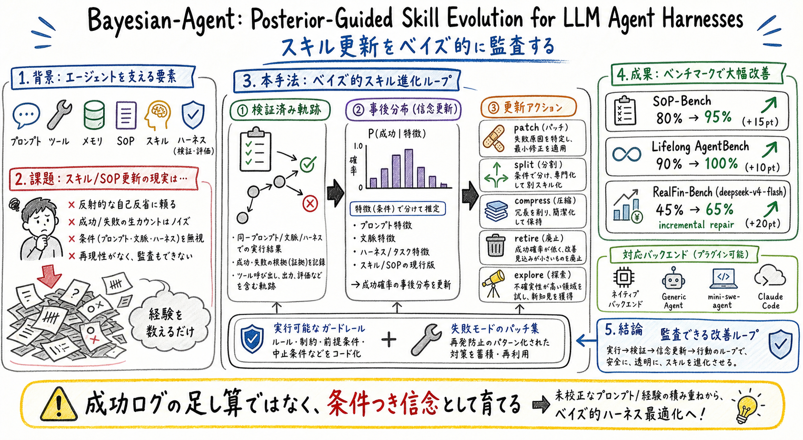

主な貢献は、skill / SOP 更新を posterior update として定式化したこと、更新アクションを監査可能に整理したこと、複数の agent backend と benchmark で incremental repair を示したことにある。

この論文の何がいいか
この論文が面白いのは、skill 更新の失敗パターンにかなり現実味があるところだ。agent を運用していると、失敗ログからルールを足すのは簡単だが、ルールはすぐ肥大化する。しかも、そのルールが次の状況で本当に効くのか、別の状況を壊さないのかは見えにくい。
Bayesian-Agent は、skill を信念として扱う。つまり「この手順は、どんな入力、どんな文脈、どんな harness 条件で成功しそうか」を更新していく。この考え方は、SKILL.md、MEMORY、scheduled-ops のような個人 assistant の運用にも合う。
特に効くのは、更新アクションを分けている点だ。全部を追記するのではなく、直す、分ける、圧縮する、退役させる、探索する、という選択肢を posterior に基づいて選ぶ。これは skill を長期運用する時の設計語彙になる。
おい丸のような assistant では、learn-from-logs が反省ログの置き場で終わると弱い。Bayesian-Agent 的に見ると、ログは skill の信念更新、失敗条件の分離、検証タスク、退役判断の材料になる。そこが実務に持ち帰りやすい。
どんな論文か
Bayesian-Agent は、LLM agent の skill や SOP をどう更新するかを扱う論文だ。中心にあるのは、skill を単なるプロンプト断片や手順書ではなく、ある条件下で agent が成功するかについての仮説として扱う見方である。
既存の self-improving agent は、成功/失敗の軌跡を集めて反省文を作ったり、prompt を足したり、ルールを増やしたりしがちだ。しかし、その更新がどの条件で効くのか、どの失敗を直すのか、いつ退役させるべきかは曖昧になりやすい。
この論文は、検証済みの実行軌跡から feature-conditioned categorical posterior を更新し、その posterior に基づいて skill / SOP への編集アクションを選ぶ。更新は patch、split、compress、retire、explore のような形で整理され、あとから監査しやすい audit summary として残せる。
読む価値は、agent の改善を「よさそうな反省の追記」から「条件つきで信じられる手順の更新」へ変えるところにある。個人 assistant、coding agent、長期運用 skill の設計にそのまま持ち込める視点だ。
この論文は、LLM agent の reusable skill / SOP を posterior-guided に進化させる枠組みを提案する。対象は、prompt、tools、memory、workflow、harness feedback を組み合わせて動く agent である。
各 skill / SOP は、成功率そのものではなく、条件つきで成功するという仮説として表現される。条件には、タスク特徴、モデル、コンテキスト、ツール、harness、過去の検証済み軌跡が関わる。
課題と貢献
論文中では、SOP-Bench、Lifelong AgentBench、RealFin-Bench での改善が報告されている。特に RealFin-Bench のような現実寄りの金融タスクで、単なる prompt 追記ではなく検証済み更新が効く点が読みどころになる。
手法のしくみ
1
入力は、agent が実行した軌跡、成功/失敗の検証結果、タスクや環境の特徴、既存 skill / SOP の状態である。
2
まず、実行軌跡から skill がどの条件で効いたか、どの失敗モードで壊れたかを evidence として集める。
3
次に、その evidence を使って feature-conditioned categorical posterior を更新する。ここで skill は、単なるテキストではなく、条件つき信念の対象になる。
4
posterior の変化に応じて、patch、split、compress、retire、explore などの編集アクションを選ぶ。全部を足すのではなく、直すべきか、分けるべきか、圧縮すべきか、退役させるべきかを決める。
5
更新後の skill / SOP は executable guardrail や failure-mode patch として harness に戻され、次の実行でまた検証される。最後に audit summary が残るので、なぜその更新をしたか追いやすい。
検証結果
論文では、deepseek-v4-flash を使った incremental repair で、SOP-Bench が 80% から 95%、Lifelong AgentBench が 90% から 100%、RealFin-Bench が 45% から 65% に改善したと報告されている。
backend は native backend、GenericAgent、mini-swe-agent、Claude Code などが扱われる。つまり、特定の agent 実装だけでなく、harness をまたいだ skill / SOP 更新として評価している点が重要だ。
課題と議論
この論文の魅力は、skill を足し続ける誘惑にブレーキをかける点にある。成功ログや失敗ログをそのまま規則化すると、手順は増えるが、どの条件で効くかが曖昧になる。
一方で、posterior-guided な方法にも限界はある。検証信号が弱い環境、成功/失敗のラベルが曖昧なタスク、長期的な副作用があとから出る skill では、posterior 自体が過信を生む可能性がある。
そのため実務では、posterior update と合わせて、退役条件、回帰テスト、手動レビュー、公開できない情報の扱いを設計する必要がある。
次に読むなら
- 次に読むなら、SkillOpt、Socratic-SWE、MUSE-Autoskill と並べるとよい。SkillOpt は skill document の編集と validation gate、Socratic-SWE は trace-derived skill、MUSE-Autoskill は skill lifecycle を扱う。
- 実務に落とすなら、まず既存 skill に対して、patch / split / compress / retire / explore のどれが必要かをログごとに分類する小さな表から始めるのがよさそうだ。
読後Q&A
この論文の中心問いは？
LLM agent の skill / SOP を、成功/失敗ログの単純な蓄積ではなく、検証済み軌跡に基づく条件つき posterior としてどう更新するか。
skill を信念として扱うとはどういうこと？
skill を固定の手順書ではなく、あるタスク特徴、文脈、harness 条件で成功しそうだという仮説として扱い、証拠に応じて確信度を更新するということ。
既存の反省型 self-improvement と何が違う？
反省文やルールを足すだけでなく、どの条件で効くか、どの失敗を直すか、退役させるべきかを posterior と編集アクションで分ける点が違う。
更新アクションには何がある？
論文では、patch、split、compress、retire、explore のようなアクションが扱われる。追記だけでなく、分割、圧縮、退役、探索も更新の選択肢になる。
harness はどこで効く？
skill / SOP は model 単体ではなく、prompt、tools、memory、workflow、verification を含む harness の中で実行される。更新もその実行条件と結びつけて扱われる。
評価で何が示された？
SOP-Bench、Lifelong AgentBench、RealFin-Bench で incremental repair による改善が報告されている。特に RealFin-Bench では 45% から 65% への改善が示されている。
個人 assistant 運用にどう使える？
失敗ログからルールを足す前に、どの条件で失敗したか、既存 skill の patch で足りるか、分割や退役が必要かを判断する枠組みとして使える。
注意点は？
posterior は証拠の質に依存する。検証信号が曖昧なタスクでは、数式っぽい更新に見えても過信になる可能性がある。
読む順番は？
まず abstract と method の posterior update、次に update action、最後に benchmark と audit summary を読むと、実務への接続がつかみやすい。